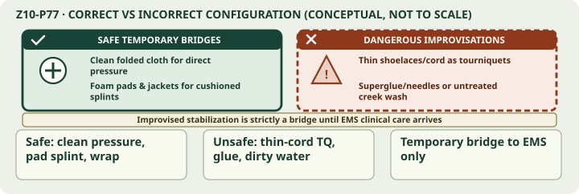

Z10-P77 · Wilderness medicine · New manuscript
Understand improvised field-aid boundaries when commercial supplies run short
Know which basic mechanical supports can be improvised safely (clean cloth pressure, padded splints) and which cannot (tourniquets, sterile sutures).
When it applies · Remote emergencies where commercial first-aid dressings or splints are exhausted or absent.
Equipment · Cleanest available dry cloth (bandana, T-shirt), foam sleeping pads, pack stays/clothing for padding, and potable water.

Actions
- Recognize safe lay improvisations when commercial supplies run out: clean folded cloth for direct bleeding pressure, rolled jackets and foam pads for cushioned limb splinting, and dry insulated sleeping bags/tarps for hypothermia wraps.[M01, M09, E05]
- Recognize hard non-improvisable boundaries: thin shoelaces/cord fail as tourniquets, dirty cloth or untreated water contaminates open wounds, household glues/needles cause deep infection, and improvised pole litters collapse under heavy loads.[M02, M06, M20]
- Treat ANY improvised stabilization as a temporary bridge strictly meant to keep the patient stable until professional EMS/SAR supplies and clinicians take over.[M20, T06]
Failure recognition · Relying on improvised wilderness tricks when carrying basic commercial gauze, nitrile gloves, and a commercial tourniquet (with training) weighs ounces.[M02, M20]
Verify · Confirm cleanest dry cloth used for pressure, generous padding under improvised splints, and zero unsafe improvised closure or thin-cord tourniquets.[M01, M02, M09]
Stop or change course · Whenever improvised stabilization fails to control bleeding, maintain warmth, or protect circulation, escalate urgency with 911/SAR immediately.[M01, T02]
Evidence and editorial notes
- E05 · NWS · What To Do If You're Caught in a Winter Storm (current web edition)
- Section: Outside and find shelter · Conditions: Cold, wet or windy winter conditions
Support: Block wind, stay dry and keep off cold ground. Keep exposure reduction separate from making a fire.
Limitations: Improvised windbreaks do not provide rated thermal protection or snow-load capacity. · Conflicting evidence: None; aligns with CDC-H.
Editorial note: Separates wind, ground, and moisture heat-loss pathways. · Specialist reviewer: Cold-weather shelter specialist
Primary source · checked 2026-11-24 - M01 · American College of Surgeons · STOP THE BLEED Training Course (current web edition)
- Section: Ensure Your Own Safety; Find Life-Threatening Bleeding; Compress · Conditions: Lay responder encountering severe external hemorrhage
Support: Ensure scene safety first, call 911, expose the wound to locate life-threatening bleeding, and apply firm continuous direct pressure with clean gauze or cloth.
Limitations: Does not replace formal hands-on Stop the Bleed training or EMS trauma care. · Conflicting evidence: None across ACS/ARC guidelines.
Editorial note: Separates life-threatening arterial/venous hemorrhage from minor scrapes. · Specialist reviewer: Wilderness medicine and trauma EMS
Primary source · checked 2026-11-24 - M02 · American College of Surgeons · STOP THE BLEED Training Course (current web edition)
- Section: Wound Packing and Commercial Tourniquet Application · Conditions: Severe extremity bleeding uncontrolled by direct pressure; trained responder with commercial windlass tourniquet
Support: Apply a commercial tourniquet high and tight on an extremity (never over a joint), tighten until bleeding stops, note the application time, and leave it in place for EMS.
Limitations: Improvised tourniquets fail frequently; formal hands-on training is required before operational reliance. · Conflicting evidence: None; strictly distinguishes commercial tourniquets from improvised bands.
Editorial note: Governs extremity hemorrhage escalation and strict EMS handoff documentation. · Specialist reviewer: Trauma EMS and wilderness medicine
Primary source · checked 2026-11-24 - M06 · NIH / MedlinePlus · Wounds and Injuries (current web edition)
- Section: Minor Wound Cleaning, Protection, and Infection Red Flags · Conditions: Superficial cuts, scrapes, and abrasions with potable water available
Support: Rinse minor wounds thoroughly with clean potable water, cover with a clean sterile dressing, and monitor for worsening redness, warmth, swelling, pus, red streaks, or fever.
Limitations: Deep punctures, animal bites, retained foreign bodies, or heavily contaminated wounds require clinical evaluation and tetanus review. · Conflicting evidence: None; separates clean potable rinsing from harsh chemical wound scrubbing.
Editorial note: Anchors field wound hygiene and infection escalation cards. · Specialist reviewer: Wilderness medicine and wound care
Primary source · checked 2026-11-24 - M09 · NIH / MedlinePlus · Fractures (current web edition)
- Section: Suspected Fracture Stabilization and Neurovascular Checks · Conditions: Suspected limb fracture, deformity, or inability to bear weight
Support: Immobilize the injured limb in the position found using padded support without attempting to straighten visibly deformed bones; check circulation, sensation, and movement beyond the injury and arrange evacuation.
Limitations: Open fractures (bone breaking skin) and femur/pelvis injuries carry high bleeding and infection risk requiring urgent EMS. · Conflicting evidence: None; forbids lay fracture reduction in routine field care.
Editorial note: Anchors splinting, neurovascular checks, and evacuation urgency in Z10. · Specialist reviewer: Orthopedics and wilderness medicine
Primary source · checked 2026-11-24 - M20 · NIH / MedlinePlus · First Aid Overview (current web edition)
- Section: Lay First-Aid Scope, Kit Readiness, and Documentation · Conditions: Pre-trip kit preparation and remote patient monitoring
Support: Maintain an inspected, unexpired first-aid kit matched to your actual training, keep written patient observations (time, responsiveness, breathing, symptoms, interventions) for EMS handoff, and practice skills in certified courses.
Limitations: Carrying advanced medical instruments without clinical training adds risk rather than capability. · Conflicting evidence: None; aligns with ARC and NPS-K.
Editorial note: Anchors kit sizing, SOAP-style lay observation logs, and scope-of-practice cards. · Specialist reviewer: Wilderness EMS and clinical education
Primary source · checked 2026-11-24 - T02 · American Red Cross · First Aid Steps (current web edition)
- Section: First Aid Steps > Call 9-1-1 · Conditions: Lay emergency response to unresponsiveness, abnormal breathing or severe bleeding
Support: Activate EMS and get needed equipment. Follow dispatcher directions and act within training.
Limitations: Remote locations may delay EMS arrival, requiring sustained stabilization after activation. · Conflicting evidence: None; aligns with NPS-E.
Editorial note: Mandates early emergency activation and dispatcher adherence. · Specialist reviewer: EMS and wilderness medicine
Primary source · checked 2026-11-24 - T06 · NPS · Outdoor Emergency Plan (current web edition)
- Section: If you get lost or hurt; call for help · Conditions: Outdoor US emergency
Support: Communicate location, last known point, situation and needs. Stay put when unable to establish a safe route unless immediate danger requires movement.
Limitations: Cell signal is unreliable in backcountry terrain; pre-trip plans bridge communication gaps. · Conflicting evidence: None; core lost-person decision rule.
Editorial note: Foundation for stay/signal/move and dispatch handoff cards. · Specialist reviewer: Search and rescue
Primary source · checked 2026-11-24
Source lineage · NIH MedlinePlus First Aid and ACS Stop the Bleed; new manuscript · Classification · New manuscript.